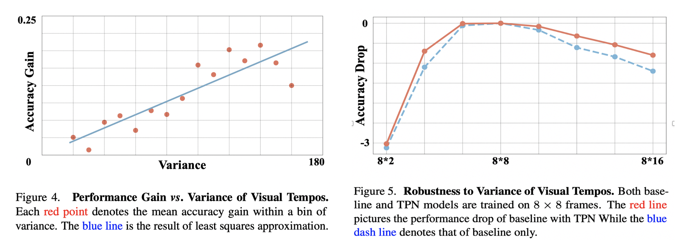

Our TPN could achieve 78.9%, 49.0% and 62.0% top-1 accuracy on the mainstream benchmarks of action recognition i.e., Kinetics-400, Something-Something V1 and V2 respectively, which basically outperforms other state-of-the-art methods. More detailed comparison and ablation studie can be found in our paper.
Per-class Performance Gain vs. Per-class Variance of Visual Tempos : Figure 4 indicates that the performance gain is clearly positively correlated with the variance of visual tempos. This study has strongly verified our motivation.
Robustness of TPN to Visual Tempo Variation : Figure 5 suggests that TPN helps improve the robustness of I3D-50, resulting in a curve with moderater fluctuations. More discussion could also be found in our experimental section.

@inproceedings{yang2020tpn,
title = {Temporal Pyramid Network for Action Recognition}},
author = {Yang, Ceyuan and Xu, Yinghao and Shi, Jianping and Dai, Bo and Zhou, Bolei},
journal = {Proceedings of the IEEE Conference on Computer Vision and Pattern Recognition (CVPR)},
year = {2020}
}